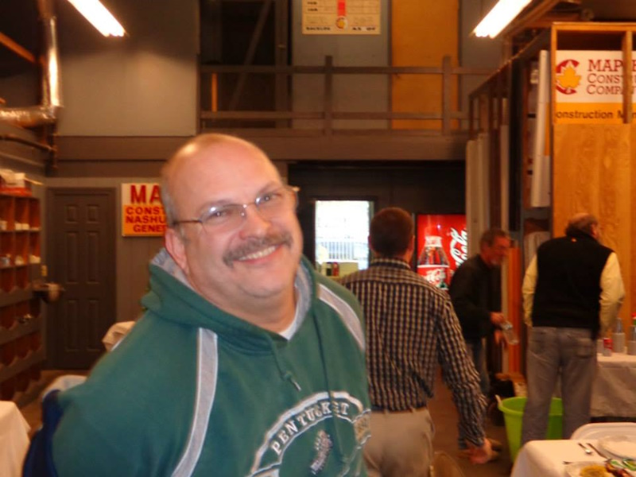

My Career
Maple Leaf
During my remarkable 33-year tenure at Maple Leaf Construction, I truly left an indelible mark on the company and the construction industry as a whole. Starting at the young age of 11, my journey began with washing trucks, an early introduction to the inner workings of construction. Over the years, I harnessed my passion and honed my skills, gradually ascending through the ranks to become a seasoned construction supervisor.
Maple Leaf Construction served as the foundation for my professional growth, providing me with invaluable opportunities to expand my knowledge and expertise. Immersed in a wide array of construction projects, I gained a profound understanding of every facet of the industry. From overseeing intricate structural frameworks to coordinating complex timelines, my meticulous attention to detail and unwavering commitment to excellence set me apart.
Beyond the technical aspects, my time at Maple Leaf Construction fostered meaningful relationships throughout the construction community in New England. Collaborating with colleagues, architects, subcontractors, and clients, I built a network based on trust, respect, and shared dedication to delivering exceptional results. My reputation for integrity, reliability, and outstanding project management extended far and wide, making me a go-to expert in the region.
My profound impact on Maple Leaf Construction extended well beyond my professional contributions. I embodied the company's values of teamwork, camaraderie, and continuous improvement. Recognized as a reliable mentor and leader, I guided and inspired countless individuals who had the privilege of working alongside me. My positive attitude, ability to motivate others, and unwavering work ethic set a shining example for aspiring construction professionals.
As I embark on the next chapter of my career at Harvey Construction, I carry with me the invaluable experiences and lessons learned during my time at Maple Leaf Construction. The legacy I left behind, both in terms of the projects I completed and the lives I touched, stands as a testament to my unwavering dedication, expertise, and lasting impact in the construction industry.
Harvey
During my time at Harvey Construction, I have continued to build upon my extensive experience and expertise in the construction industry. Joining the team was an exciting opportunity to bring my skills to new projects and collaborate with a talented group of professionals. From the moment I stepped foot on the job sites, I knew I had found a place where my passion for construction could thrive.
As a valuable member of the Harvey Construction team, I have had the privilege of working on diverse and challenging projects. From large-scale commercial developments to intricate residential builds, I have honed my skills in overseeing every aspect of construction. With a strong work ethic and meticulous attention to detail, I ensure that each project is executed to the highest standards of quality and craftsmanship.
Beyond the projects themselves, the Harvey Construction team has become like a second family to me. We work together seamlessly, leveraging our collective expertise to overcome challenges and deliver outstanding results. The camaraderie and collaborative spirit within the company make every day on the job enjoyable and fulfilling.
Looking towards the future, I am incredibly excited about the opportunities that lie ahead. The construction industry is constantly evolving, and I am eager to embrace new technologies, innovative approaches, and sustainable practices. With each new project, I am committed to pushing the boundaries of what can be achieved and leaving a lasting impact on the communities we serve.
I am grateful for the experiences and relationships that both Maple Leaf Construction and Harvey Construction have provided me throughout my career. They have shaped me into the construction professional I am today, and I am excited to continue making a difference in the industry. The future holds endless possibilities, and I am ready to embark on new ventures, tackle new challenges, and create lasting legacies through my passion for construction.